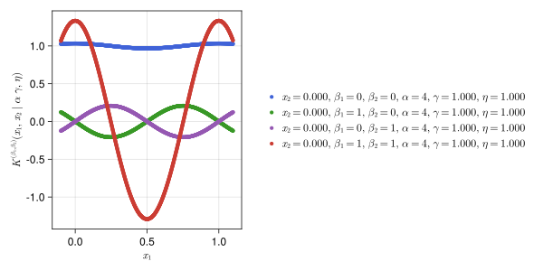

Fast Gaussian Processes
See the Tutorial for instructions on how to use this package.
FastGaussianProcesses.jl implements fast construction methods for Gaussian Process regression when one has control over the design of experiments. By matching shift invariant kernels to $N$ quasi-random sampling locations, the cost of GP fitting (including optimization of kernel parameters) is reduced from $\mathcal{O}(N^3)$ to $\mathcal{O}(N \log N)$.
FastGaussianProcesses.jl also includes methods which quickly incorporate gradient information into the GP model. Suppose we want to fit a GP to $f: [0,1]^s \to \mathbb{R}$ and evaluating $f(\boldsymbol{x})$ also provides $\nabla f(\boldsymbol{x})$, perhaps via automatic differentiation. Then every evaluation yields $M = 1+s$ derivative orders $(f^{(\boldsymbol{0})},f^{(\boldsymbol{e}_1)},\dots,f^{(\boldsymbol{e}_s)})$ where $\boldsymbol{e}_j$ is $1$ at index $j$ and $0$ everywhere else. Generalizing the ideas for $M=1$, the cost of GP fitting (including optimization of kernel parameters) is reduced from $\mathcal{O}(M^3N^3)$ to $\mathcal{O}(M^2 N \log N + M^3 N)$.
This package implements three flavors of GPs which we discuss in the next three sections. "Fast" GP indicates this is a reduced cost method requiring control over the design of experiments and using sampling sequences in $[0,1]^s$. QMCGenerators.jl is used to generate these lattice and digital sequences in base $2$. The GPs are compared on the example function $f:[0,1] \to \mathbb{R}$ defined as
\[f(x) = f^{(0)}(x) = x\sin(10x)\]
with gradient
\[f^{(1)}(x) = \sin(10x)+10x\cos(10x).\]
Fast GP Lattice
Fast GP with a lattice sampling sequence (base $2$) and matching shift invariant kernel. This additionally supports derivative information beyond the gradient i.e. second derivatives and beyond. Kernels of varying derivative order are shown below.

The fitted GP is visualized its posterior mean (the blue solid line) and 95% confidence interval around each point (the shaded light blue region). Notice the periodicity implied by the above kernels is assumed by the GP.

Fast GP Digital
Fast GP with a digital sampling sequence (base $2$) and matching digitally shift invariant kernel. Notice the discontinuities in the kernels.


GP RBF
(Slow) GP with arbitrary samples in $\mathbb{R}^s$ and a radial basis function (RBF) kernel.

References
Jagadeeswaran, R. (2019). Fast automatic Bayesian cubature using matching kernels and designs. Illinois Institute of Technology.
Jagadeeswaran, R., & Hickernell, F. J. (2019). Fast automatic Bayesian cubature using lattice sampling. Statistics and Computing, 29(6), 1215-1229.
Jagadeeswaran, R., & Hickernell, F. J. (2022). Fast Automatic Bayesian Cubature Using Sobol’ Sampling. In Advances in Modeling and Simulation: Festschrift for Pierre L'Ecuyer (pp. 301-318). Cham: Springer International Publishing.
Kaarnioja, V., Kuo, F. Y., & Sloan, I. H. (2023). Lattice-based kernel approximation and serendipitous weights for parametric PDEs in very high dimensions. arXiv preprint arXiv:2303.17755.
Rasmussen, C. E., & Williams, C. K. (2006). Gaussian processes for machine learning (Vol. 1, p. 159). Cambridge, MA: MIT press.